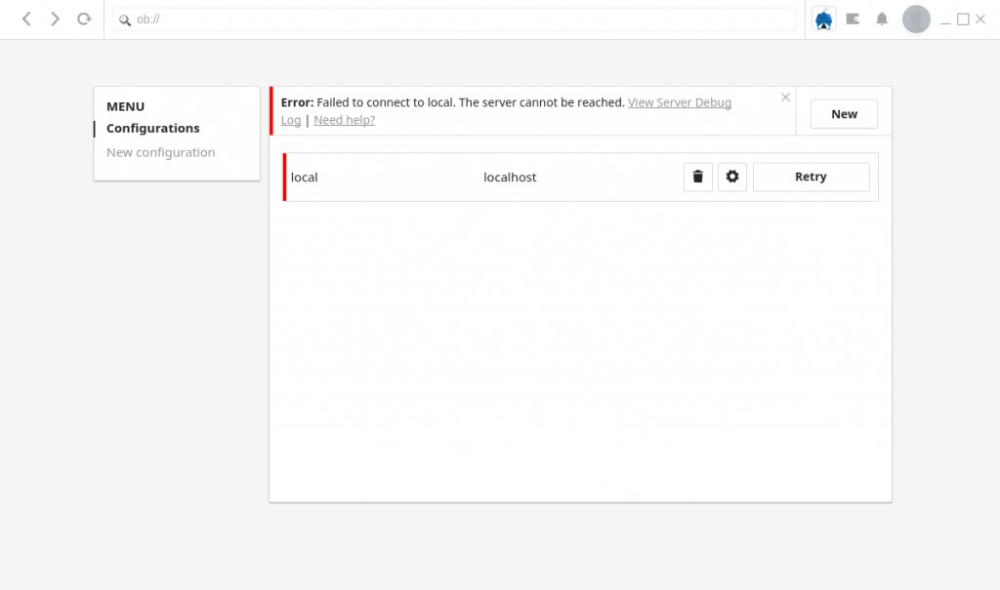
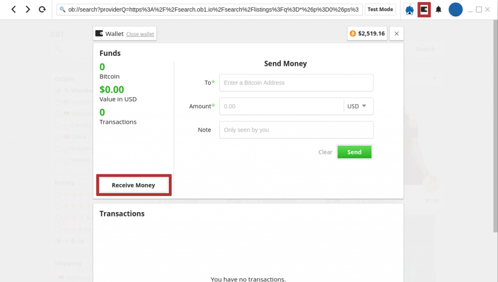
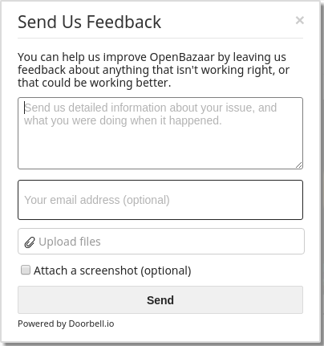

If you’re part of our Alpha or Beta testers, we’d like to thank you for helping us make sure the 2.0 release of the OpenBazaar platform is as high-quality as possible. If you are not a tester, but would like to be, click here to learn how you can participate.
This post will help make testing as simple as possible, and also ensure that your testing provides valuable information for the OpenBazaar development team. We’ll cover how to install and run OpenBazaar, how / what to test, and how to report feedback.
Please note that vendors looking to create stores before 2.0 launches must wait until the Beta launch or later; any stores created during the Alpha testing period will not be usable when the network launches for real.
Installation
This alpha testing phase is limited to prevent an overwhelming amount of feedback to the developers, and testers will receive the installer links via email. When beta testing begins, we will update this post with links to the installers. If you aren’t included in the alpha testing but are trying to build a service using OpenBazaar, contact the developers and we’ll be sure to include you.
Using the installer is simple. Click the link to download the file, and then open the file when it has finished downloading. In a few moments, OpenBazaar should install and begin running.
The first time you run OpenBazaar, it might take longer than expected to start properly. You may see something like the following image:

OpenBazaar is actually two programs that users run on your computer, the client (what you see) and the server (which does the work in the background). This message means that the client is running, but the server hasn’t started properly yet. Wait a few seconds, then click the “Retry” button, and your client and server should connect. If this doesn’t work after a few tries, then your server might not be starting at all and you should report this to our developers (see “Reporting” section below).
Testing
Now that OpenBazaar is installed, you can begin testing. You will first go through a quick onboarding process, which you can fill out as you would when using the final product.
In the alpha testing phase the test builds will automatically use testnet Bitcoins, not real Bitcoins. This is to prevent accidental loss of funds. You can use the built-in wallet to create an address to receive testnet coins by clicking the wallet button on the top right first, then clicking “Receive Money” on the left side of the wallet interface (note the buttons highlighted in red below):

You’ll see a QR code as well as a testnet Bitcoin address. Copy the testnet Bitcoin address, it should start with a “m” unlike a regular Bitcoin address:

With this address, you can visit a testnet faucet and receive some free testnet Bitcoin to use. Paste the address into their service and you should receive enough testnet Bitcoins to start. Typically, these coins arrive quickly, but the testnet occasionally has problems and it may take minutes or hours to arrive.
The Bitcoin testnet can be unreliable, and if you find a problem with the wallet or transactions, it’s not always clear whether it’s a problem with the OpenBazaar code or a problem with testnet. In order to help us distinguish between the two, before you report a problem with the wallet or transactions please visit your settings > advanced, and click “Show Block Data,” then copy the output and include this text in your report.
When testing, use the platform as you expect you’ll use it when it’s finished. For thoroughness, you can use the following testing script:
Use search
- Search for various items
- Open a listing from search results
- Use filters and “sort by” features
Test wallet
- Receive funds (explained above)
- Send funds
- Review transactions to ensure accuracy (confirmations, exchange rate price, amount, etc)
- Note that transactions may not be instant if the testnet blockchain isn’t working properly
Ordering
- Click the buy button
- Purchase a listing and change quantity / variants
- Pay from internal wallet
- Pay from external wallet
- Check purchases in Purchases section, open orders
- After paying for a purchase, click the Purchases link or click Purchases in the top right navigation menu to go to the Purchases screen
- Message vendor through order section (after placing an order, you can send the vendor a message)
Create listings
- Create physical listing with variants and multiple shipping options
- Create digital listing
- Create service listing
- Add multiple photos to each listing
- Browse and select a moderator in the store settings
Manage listings (this section requires someone to purchase your test listings)
- Open sales tab
- Open orders
- Refund order
- Confirm order
- Open a dispute
- Message buyer through order section
Test settings
- Change settings in each section, saving each time
Chat
- Navigate to a user and message them (you can use search or the “Connected Peers” option in the menu)
- Click chat avatars to navigate to user pages
- Delete conversation
Reporting
There are multiple ways to report your feedback to the OpenBazaar development team. Please read the descriptions below to determine which method is best for your specific feedback.
Built-in feedback tool
During testing, the OpenBazaar client includes a built-in tool for giving feedback. Click the “Feedback” button on the bottom right of the client, and you’ll see a form appear:

This is the preferred reporting method when you’ve found bugs or something not working correctly during testing. Please include your operating system, a description of what happened, and what you were doing when it happened.
Ideally you would take a screenshot of the error or problem you see, and then include that screenshot using the “Upload files” section of the form. You can also upload logs or text files if you have them. You can use the “Attach a screenshot” option at the bottom, but they are lower quality than manually attached screenshots and not preferred.
If you’re willing to talk to the developers about the bug you found, please include your email address so we can respond to you.
Help Desk
If you don’t have a bug to report, but wish to give us more detailed feedback on your testing experience, or have questions for the development team, you can use our help desk. In the subject line, please mention that this is testing feedback. If you’d like a response, indicate that in your message. This method is also good for reporting more complicated or serious problems found in testing that need you to include a log file or other detailed information. To use this method you will need to include your email address.
Slack
Our community slack is always open to talk to other members of the OpenBazaar community. Our developers can be reached there as well, but we strongly prefer that users first use the other reporting methods for testing feedback first, as the developers are busy trying to finish building the product. If you need troubleshooting help, the slack is a good place to ask others who might have had the same problem.
Github
All the code for OpenBazaar is open source and on Github (server and client). We ask users not to open github issues to submit testing feedback. We always welcome developers submitting pull requests or opening issues to address technical problems.
Do you want to help build this with us?
Download OpenBazaar right now to start buying or selling in minutes or just see what's for sale at OpenBazaar.com.
Developers, join us on Github to contribute to this open-source project!